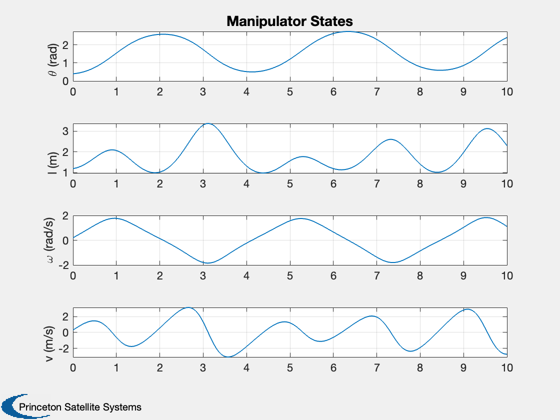
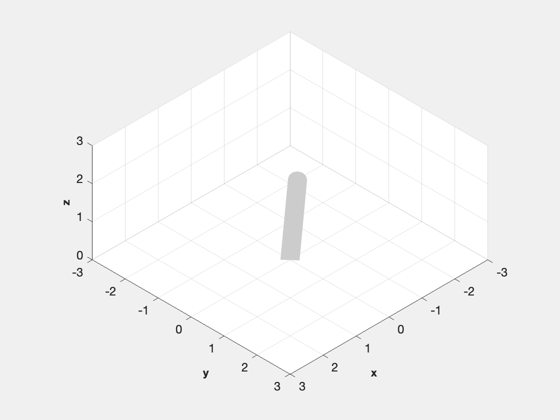

Contents
RP Manipulator Demo
Demonstrate an RP manipulator. ------------------------------------------------------------------------- Reference: Craig, "Introduction to Robotics" Example 6.5, p. 209
%--------------------------------------------------------------------------
%-------------------------------------------------------------------------- % Copyright (c) 1999, 2013 Princeton Satellite Systems, Inc. % All rights reserved. %--------------------------------------------------------------------------
Initialize
%------------ % Simulation time control %------------------------ tEnd = 10; dT = 0.025; nSim = tEnd/dT+1; % The initialization function uses parameter pairs. The ones starting with % name are links. Entering name creates a new link. All link parameters % must be specified before the next name. %------------------------------------------------------------------------- h = RHSRobotInitialize( 'robot name','RP Manipulator',... 'gravity vector',[0;-9.806;0],... 'name','Link1','mass',4,'radius',0.2,... 'center of mass',[1.5;0;0],'parent',0,'r parent',1,... 'state',1,'hinge','revolute',...% Link 1 'link vector',[3; 0; 0],'inertia',diag([10 20 30]),... 'transformation matrix',eye(3),... 'name','Link2','mass',6,'radius',0.2,... 'center of mass',[0;0;0],'parent',1,... 'r parent',1,'state',2,'hinge','prismatic',...% Link 2 'link vector',[0;0;0],'inertia',diag([1 2 3]),... 'transformation matrix',[0 0 -1;0 1 0;1 0 0]);
Simulate
%---------- x = [.4; 1.2; 0.2; 0.3]; % Run the simulation %------------------- t = dT*(0:(nSim-1)); xPlot = zeros(length(x),nSim); for k = 1:nSim % Plotting array %--------------- xPlot(:,k) = x; % Enter the motor torques into the dynamics model %----------------------------------------------- x = RK4( 'RHSRobot', x, dT, t(k), h ); end
Plot the results
%------------------ % Plot labels %------------ yL = {'\theta (rad)' 'l (m)' '\omega (rad/s)' 'v (m/s)'}; [t,tL] = TimeLabl(t); Plot2D( t, xPlot, t, yL, 'Manipulator States' ); % Animate %-------- DrawRobot( 'initialize', h ) DrawRobot( 'update', xPlot, h, 0.1 ); %-------------------------------------- % PSS internal file version information %-------------------------------------- % $Id: 4e77ef054e42b3c3de4e53707112d708729ac9cc $ 